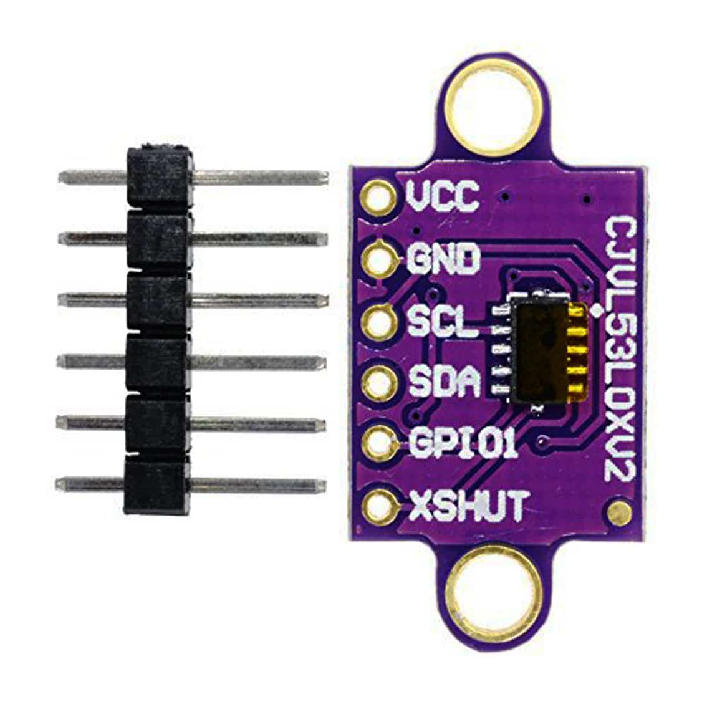
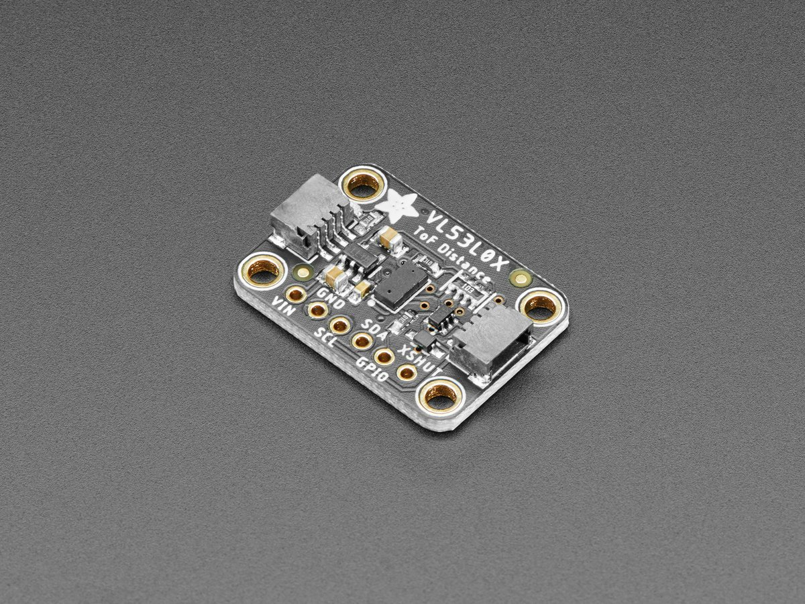
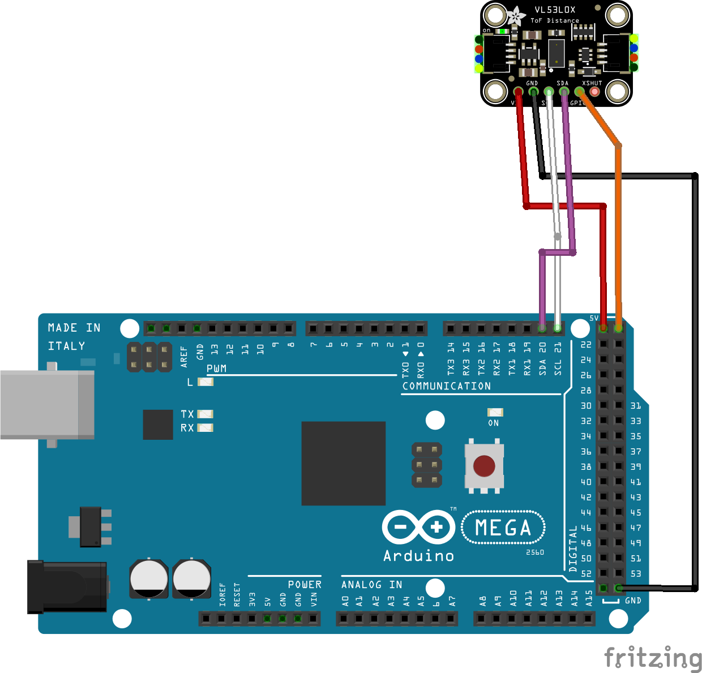
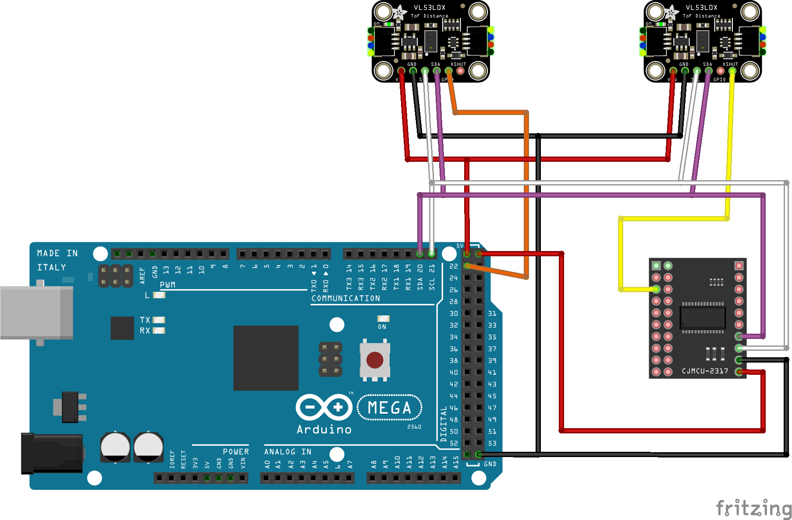

VL53L0X Time of Flight Sensor


Time of Flight (or ToF) sensors can provide a more reliable and accurate sensor than traditional IR sensors as they are not susceptible to interference from different and varying lighting conditions.
Further to this, these sensors can be programmed to activate only within a specific distance range, enabling a large variety of use cases.
EX‑CommandStation has support for the VL53L0X ToF sensor via the “IO_VL53L0X.h” HAL device driver which connects to the I2C bus of the CommandStation.
 {kind=link}
{kind=link}
Theory of operation
The VL53L0X Time-Of-Flight sensor operates by sending a short laser pulse and detecting the reflection of the pulse. The time between the pulse and the receipt of reflections is measured and used to determine the distance to the reflecting object.
For economy of memory and processing time, this driver includes only part of the code that ST provide in their API. Also, the API code isn’t very clear and it is not easy to identify what operations are useful and what are not. The operation shown here doesn’t include any calibration, so is probably not as accurate as using the full driver, but it’s probably accurate enough for the purpose.
Physical connection
Each VL53L0X device will, by default, reside on the same I2C address of 0x29, and therefore connecting multiple devices to the same I2C bus requires consideration and planning.
Connecting a single device
Connecting a single device is a simple matter of connecting the SDA and SCL pins to the SDA and SCL pins of your EX‑CommandStation, or your I2C bus if you have multiple other devices connected.
Warning
If the device’s XSHUT pin is not connected, then it is very prone to noise, and the device may even reset when handled. If you’re not using XSHUT, then it’s best to tie it to +5V.
Once connected, you will need to configure the device driver as per Configuring a single device.
{kind=link}
Connecting multiple devices
Connecting multiple devices also require connecting each device to the SDA and SCL pins, however in addition to this, you will need to connect each device’s XSHUT pin to an available I/O pin either directly on your EX‑CommandStation, or to an available I/O pin on an I/O expander such as an MCP23017. The XSHUT pin connection is required in order to be able to have each device addressed separately.
Once connected, you will need to configure the device driver for each device as per Configuring multiple devices.
{kind=link}
Device driver configuration
Configuring support for one or more VL53L0X devices requires modifying “myHal.cpp” to include the device driver “IO_VL53L0X.h” and add an entry for each device to be configured.
The device driver allocates up to 3 vpins to each device:
A digital read on the first pin will return a value that indicates whether an object is within the threshold range, and the return value will be 1 for true, or 0 for false
An analogue read on the first pin returns the last measured distance (in mm)
An analogue read on the second pin returns the signal strength
An analogue read on the third pin returns detected ambient light level
By default, the device takes around 60ms to complete a ranging operation, so we do a 100ms cycle (10 samples per second).
The VL53L0X is initially set to respond to I2C address 0x29. If you only have one module, you can use this address. However, the address can be modified by software. If you select another address, that address will be written to the device and used until the device is reset.
To enable support for one or more devices, ensure the “IO_VL53L0X.h” device driver is included at the beginning of your “myHal.cpp” file:
#if !defined(IO_NO_HAL)
// Include devices you need.
#include "IODevice.h"
#include "IO_VL53L0X.h" // Laser time-of-flight sensor
...
Configuring a single device
For a single device, you need a single entry to create the device also in “myHal.cpp”:
...
void halSetup() {
VL53L0X::create(firstVpin, nPins, i2cAddress, lowThreshold, highThreshold);
...
Where:
firstVpin is an available vpin reserved for reading the device
nPins is 1, 2 or 3
i2cAddress is the I2C address of the device (normally 0x29 - should be no need to change this for a single device)
lowThreshold is the distance at which the digital vpin state is set to 1 (in mm)
highThreshold is the distance at which the digital vpin state is set to 0 (in mm)
For example, this entry configures a device on vpin 4000 using the default address of 0x29. A digital read of this vpin will return a 1 if an object is within 200mm, and will return a 0 if an object moves more than 250mm from the sensor:
...
void halSetup() {
VL53L0X::create(4000, 3, 0x29, 200, 250);
...
Configuring multiple devices
Note
When using multiple devices, do not configure any device to use the default I2C address of 0x29, as this address needs to be free in order to configure each device on startup.
If you have more than one module, then you will need to specify a digital vpin (Arduino digital output or I/O expander pin) which you connect to the module’s XSHUT pin. When the device driver starts, the XSHUT pin is set LOW to turn the module off. Once all VL53L0X modules are turned off, the driver works through each module in turn by setting XSHUT to HIGH to turn the module on, then writes the module’s desired I2C address. In this way, many VL53L0X modules can be connected to the one I2C bus, each one using a distinct I2C address.
Each device needs its own specific entry in “myHal.cpp”, and requires an additional argument to specify the digital vpin that connects to the device’s XSHUT pin.
...
void halSetup() {
VL53L0X::create(firstVpin, nPins, i2cAddress, lowThreshold, highThreshold, xshutPin);
...
Where:
firstVpin is an available vpin reserved for reading the device
nPins is 1, 2 or 3
i2cAddress is the address of the device (normally 0x29 - should be no need to change this for a single device)
lowThreshold is the distance at which the digital vpin state is set to 1 (in mm)
highThreshold is the distance at which the digital vpin state is set to 0 (in mm)
xshutPin is the vpin number corresponding to either a direct I/O pin or an I/O pin on an I/O expander
For example, these entries configure two devices on vpins 4000 and 4003, with I2C addresses 0x30 and 0x31. The device at 0x30 is connected directly to an Arduino Mega2560’s digital pin 22, and the device at 0x31 is connected to the first digital I/O pin of the first MCP23017 device at vpin 164. A digital read of each of the device’s vpins will return a 1 if an object is within 200mm, and will return a 0 if an object moves more than 250mm from the sensor:
Note the second sensor starts at vpin 4003 as the first sensor consumes vpins 4000, 4001, and 4002.
...
void halSetup() {
VL53L0X::create(4000, 3, 0x30, 200, 250, 22);
VL53L0X::create(4003, 3, 0x31, 200, 250, 164);
...
Sensor configuration for JMRI
If you are using JMRI and require these to be available as sensors, then they can be configured via the DCC-EX <Z id vpin iflag> command.
To create sensors for our examples above, the commands would be as shown below, and for simplicity we keep the sensor ID the same as the vpin ID in use.
<S 4000 4000 0>
<S 4003 4003 0>
With these definitions, when an object comes within 200mm of the sensors, a <Q id> message will be sent to all defined serial ports with the appropriate sensor ID:
<Q 4000>
<Q 4003>
Conversely, when an object moves more than 250mm from the sensors, a <q id> message will be sent instead:
<q 4000>
<q 4003>
To ensure sensors are defined at startup, refer to Startup Configuration.
EX-RAIL integration
EX‑RAIL enables utilising these devices as both digital and analogue sensors.
Using the standard digital sensor commands (AT, AFTER, ATTIMEOUT, IF, IFNOT, IFTIMEOUT) operates as per any other digital sensor, using the ranges specified when configuring the devices.
For example:
AT(4000) // Will trigger when an object is within 200mm
AFTER(4003) // Will trigger 0.5s after an object moves 250mm away
Todo
LOW - VL53L0X - validate VL53L0X works with EX-RAIL’s analogue sensor commands ATGTE, ATLT, IFGTE, IFLT
Note
Using a VL53L0X with EX-RAIL’s analogue sensor commands has not been validated, this may not work.
With EX‑RAIL, you can also use the analogue sensor commands (ATGTE, ATLT, IFGTE, IFLT) to have automation based on the actual distance from the sensor, rather than it operating like a simple on/off switch.
For example:
ATGTE(4000, 150) // Will trigger when an object is 150mm or further away from the sensor
ATLT(4003, 100) // Will trigger when an object is less than 100mm away